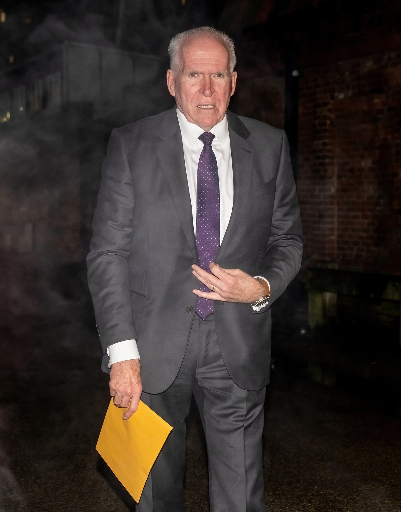
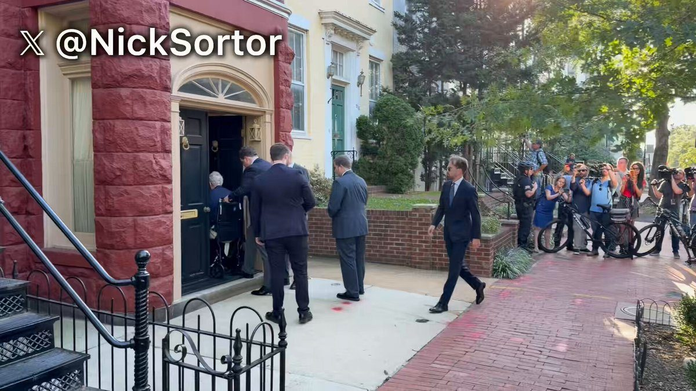
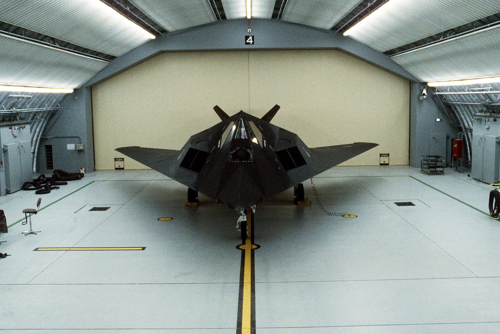
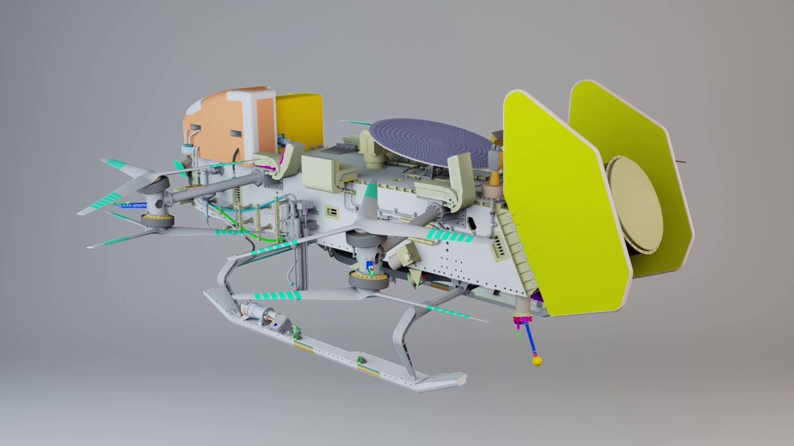
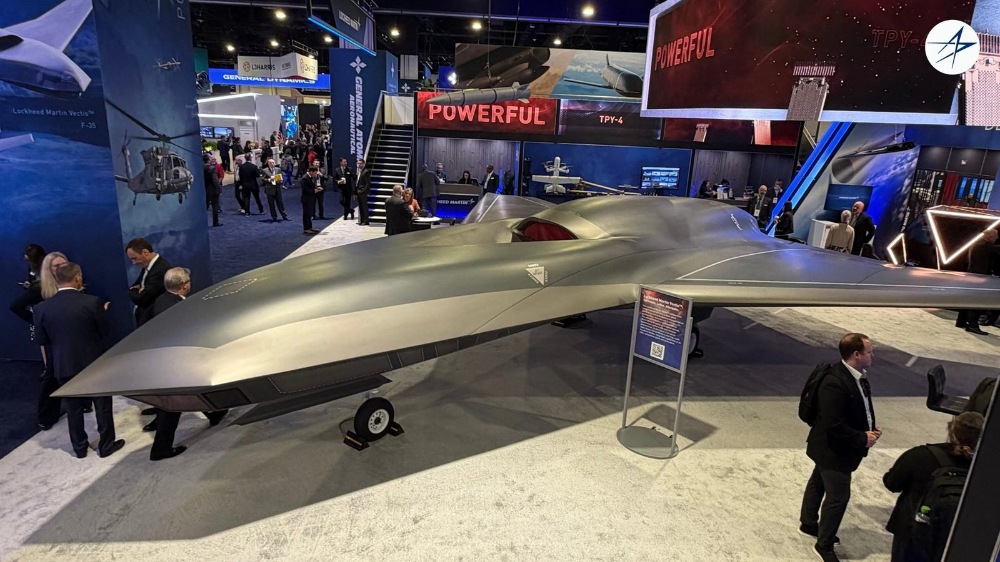
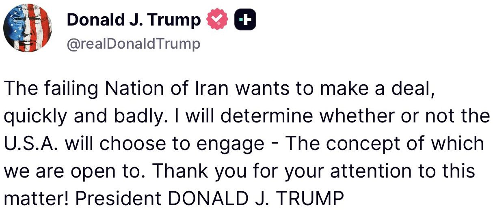
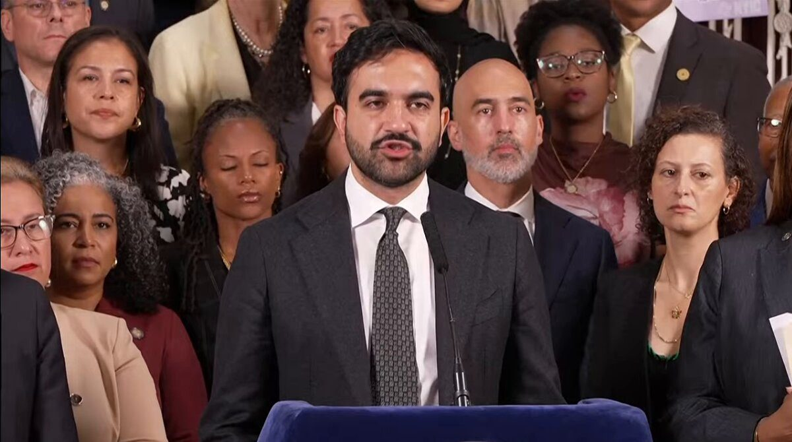
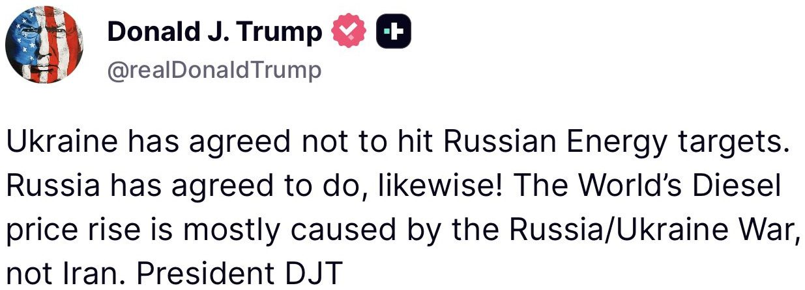

BREAKING: Former CIA Director John Brennan subpoenaed to testify before Florida grand jury, lawyer says, as DOJ investigates whether there was a conspiracy to deprive Trump of civil rights
🚨NEWS: Senate Republicans have released new Clarity Act text featuring a revised ethics proposal agreed to by President Trump.
The text also contains changes to the sections on the Blockchain Regulatory Certainty Act (BRCA), stablecoin yield, and the so-called “Ag title.”
Republicans are calling it their “last, best and final” offer to Democrats ahead of Tuesday’s cloture vote.
Some high-level details.👇🏼
On BRCA: The provision has been narrowed to the Bank Secrecy Act and civil enforcement. Specific language extending its protections to criminal cases, including prosecutions under Section 1960, has been removed.
On ethics: Trump has agreed to what a GOP aide describes as “80%” of the Tillis-Gallego ethics proposal including to either divest “substantial” crypto-related financial interests or place them in a blind trust. It would also allow a role for state attorneys general to enforce ethics provisions, something which the White House had previously balked at.
On yield: Added “circuit breaker” language (floated by Tillis in July) that would effectively act as a backstop by allowing federal regulators to intervene if there was evidence of widespread deposit flight from community banks to stablecoins. The federal regulator that will be the arbiter of this: Treasury Secretary Scott Bessent.
On Ag: The updated text adds tighter guardrails around vertical integration, including affiliate trading and conflicts of interest involving digital commodity exchanges, brokers and dealers. It also clarifies that state consumer protection laws still apply and that developer protections do not create exemptions from derivatives laws or impact prediction markets.
More to come in the @CryptoAmerica_ newsletter tomorrow AM.
I’ve said many times that the CLARITY Act is essential to ensuring America wins the global race for new technology. That’s the reason Congress passed the GENIUS Act: to ensure that stablecoin infrastructure, a revolutionary financial technology, will be built in America.
Ensuring that America’s community bank sector continues to thrive has been a constant focus of mine since day one. And the administration’s dual focus on enabling new digital technology to flourish and appropriately tailoring community bank regulation is key to both sectors driving U.S. economic growth together over the next several decades.
The final draft of the CLARITY Act furthers this mission. It gives the Secretary of the Treasury additional authority to act if the facts around deposit flight change to the detriment of community banks. If stablecoins cause harm to community banks, I will not hesitate to use these tools to ensure they remain fully protected. Community banks are essential to U.S. economic performance and Main Street growth. Economic security is national security, and community banks play a major role in this principle.
USDC has processed more than $100T in all-time volume*.
Stablecoins are having a moment. USDC has been moving money at internet scale for years.
Already moving. Already trusted. Already here.
*USDC lifetime onchain transaction volume as of 9.12.26
▶ Watch on XCommunity banks are in a stronger position to compete and win if they use stablecoins - and we're proud to help them.
We're helping 1,000+ community banks get access to stablecoin capabilities inside their existing systems, in partnership with @Moov. This unlocks faster settlement, lower costs, and real time access to capital.
The noise in Washington about stablecoins and community banks misses the most important point: stablecoins are an opportunity.
JUST IN: 🇦🇪 UAE to integrate Avalanche $AVAX blockchain into its national digital identity platform UAE PASS.
JUST IN: 🇺🇸 President Trump officially agrees to new bipartisan crypto Clarity Act ethics provisions.
THIS IS PATHETIC.
Mitch McConnell vanishes for over three months, then rolls out of his D.C. house with a massive police escort after the Senate already started voting. Late again. Missing again. Still collecting a Senate seat like it is a lifetime membership card.
He should be forced to retire. Kentucky deserves a senator who can show up, vote on time, and fight for America First without disappearing into a bunker.
This is exactly why we need term limits.
Power should not be a nursing home with better security. Clock out, Mitch.
America is done waiting.

▶ Watch on XA Lockheed F-117A Nighthawk stealth fighter is joining the National Air and Space Museum collection. The F-117 is the world’s first true operational stealth combat aircraft.
Transferred from the U.S. Air Force and prepared for public display by Lockheed Martin Skunk Works, our F-117 will make its debut at the Steven F. Udvar-Hazy Center in late October. Learn more:

🚨 Since 2019, Bloomberg has spent more than $1 BILLION on anti-fossil fuel campaigns.
Chairman @RepJamesComer and @RepEricBurlison are investigating Bloomberg Philanthropies for funding environmental groups waging lawfare against American energy. 👇🏻 https://oversight.house.gov/release/comer-burlison-launch-investigation-into-bloomberg-philanthropies-funding-of-anti-american-energy-lawfare/
Exclusive: The NSA will undergo its most extensive internal restructuring in at least a decade, according to officials.
The initiative calls for the creation of five new organizations in AI, China, cybersecurity, combat support, and global intelligence.
Just a friendly reminder that @NASA is building a nuclear-powered drone and sending it to Saturn’s moon Titan to search for the building blocks of life.
Honored to have helped build the laser that will zap Titan samples for analysis by the onboard mass spectrometer (called DraMS).
The actual spacecraft, a rotorcraft the size of a car, is being built by the legendary team at @JHUAPL.
It launches on a Falcon Heavy in July 2028, beginning a billion-mile journey to the outer Solar System.
Mission of a lifetime.

▶ Watch on XWe said Lockheed Martin Vectis™ was kind of a big deal. We meant it. 🦨
The Vectis™ full-scale model just made its #AFANational debut and let’s just say, photos don’t quite do it justice.

BREAKING: President Trump doubles down on his rejection of AI safety concerns.
"Don't kill the Golden Goose," Trump says.
Tech companies must be responsible for AI safety, Mike Johnson says, not Congress
BREAKING: Repairs to Saudi Arabia's East-West oil pipeline will take far longer than a month due to a lack of spare parts, with the pumping infrastructure catastrophically damaged and at least 8 locations on the pipe hit, per initial reports citing sources inside Saudi Arabia.
That leaves Saudi Arabia set to run out of crude oil stocks for export within five to seven days, taking around 4 million barrels per day, ~4% of global supply, off the market, per three industry sources to Reuters.
Some repaired points were struck again, using up the spares and undoing the work. Yanbu has about a week of stocks left on the kingdom's only export route that does not pass through Hormuz.
Bravo, the U.S. Air Force weapon systems officer who was stranded behind enemy lines in Iran for two days, tells 60 Minutes about the first message he was able to send to the U.S.: “God is good.” https://t.co/xqTEaggw2A
▶ Watch on XTreasury launched Operation Economic Outcast to cut off all financial lifelines to the Iranian regime and its enablers. That’s why I issued a new call for whistleblowers to come forward with tips about those who facilitate Iran’s terror.
To anyone worldwide with information on these lifelines: This is your chance. If you have actionable information for Treasury, you may be eligible for an award, no matter where you live or who signs your paycheck. If you see something, say something.
Today, under Operation Economic Outcast, the U.S. Department of the Treasury’s Office of Foreign Assets Control designated prominent Russian financial institution VTB Bank for its involvement in Iranian sanctions evasion, including establishing correspondent relationships with sanctioned Iranian banks. Operation Economic Outcast continues to sever the remaining economic lifelines that sustain the Iranian regime.

JUST IN: Iran is reportedly facing growing gasoline shortages, rising unemployment, & soaring inflation amid the U.S. “Operation Economic Outcast” campaign.
🚨BREAKING: The Trump Administration has invoked the long-unenforced Immigration Act of 1882 to prohibit entry into the United States of “any convict, lunatic, idiot, or any person unable to take care of himself or herself without becoming a public charge.”
Ultimately, this will allow the Trump Administration to deny green cards to immigrants who are likely to use federal welfare, food stamps, or Medicaid, and to revoke the green cards of immigrants who are currently using these programs.
The new rule is set to take effect Friday, September 18.
As a result, 5.6 million immigrants are expected to lose access to those benefits, and American taxpayers are expected to save $13 billion per year.
Follow: @MorseReport
Mamdani announces that he's suing the Trump admin over the new rule that allows them to deny green cards to foreigners who are likely to rely on welfare.
Says that "four million people will unenroll from their healthcare" and that "people will die" if more green cards aren't given to welfare dependent foreigners.

▶ Watch on XToday, SBA announced suspensions for 870,000 PPP and COVID EIDL borrowers tied to $39 billion in suspected fraud, in our biggest fraud action to date.
In total, the Trump SBA has now suspended about 1 million borrowers associated with $49 billion in suspected pandemic fraud across all 50 states and U.S. territories.
Also today, the agency announced “Operation No Doze” in partnership with @SBAOIG – a campaign that will send demand letters to suspected fraudsters across the nation, starting in Kansas and Missouri.
The agency has already referred $22 billion to Treasury – and will continue to partner with its federal counterparts across the Administration to both claw back stolen dollars and prosecute criminals to the fullest extent of the law.
#BREAKING: Vance to suspend 870,000 people from federal loans over $39B in suspected COVID fraud.
U.S. has deployed space-control weapons in orbit, Air Force secretary says https://t.co/id98Zbnrvt

Department of War Announces a $450 Million Investment in The Elmet Group to Secure America's Tungsten Supply Chain
Hyundai Steel plans to open steel plant in Louisiana
JUST IN: Saudi Energy Minister announces the kingdom will pursue nuclear development with international oversight.
#BREAKING: Homan confirms criminal probe into Ilhan Omar, says she could be denaturalized.